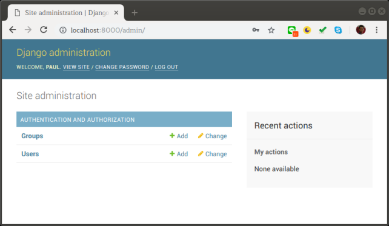
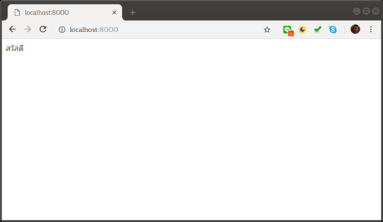

7.1. Django 2 ตอนที่ 1¶
pyenv เป็นโปรแกรมสำหรับจัดการเวอร์ชันของ Python ที่ช่วยให้สามารถใช้ Python ได้หลายเวอร์ชันในระบบปฏิบัติการเดียว
เพื่อให้สภาพแวดล้อมในการสร้างเว็บเหมือนกันมากที่สุดเท่าที่จะทำได้ จึงขอแนะนำให้ติดตั้ง pyenv ก่อนตามคำสั่งต่อไปนี้
7.1.1. ซอฟต์แวร์ที่ต้องใช้¶
- ติดตั้ง curl
sudo apt install curl
- ติดตั้ง pyenv-installer
curl -L https://github.com/pyenv/pyenv-installer/raw/master/bin/pyenv-installer | bash
- ติดตั้ง python 3.7.0
pyenv install 3.7.0
pyenv global 3.7.0
- สร้าง virtualenv ชื่อ djangoenv
pyenv virtualenv djangoenv
- เปิดใช้งาน djangoenv
pyenv activate djangoenv
7.1.2. ขั้นตอนการพัฒนาเว็บ¶
- ติดตั้ง django
pip install django
- สร้าง project ในตัวอย่างใช้ชื่อ calendarproject
django-admin startproject calendarproject
- สร้างตารางในฐานข้อมูล
cd calendarproject
./manage.py migrate
- สร้าง admin account
./manage.py createsuperuser
ในขั้นตอนนี้จะต้องกรอก Username, Email และ Password
- เปิด server ให้บริการ
./manage.py runserver
- เปิด web browser แล้วไปที่ http://localhost:8000
- หน้าจัดการข้อมูลผู้ใช้งานจะอยู่ที่ http://localhost:8000/admin
เมื่อกรอก Username และ Password จากข้อ 4 แล้วจะเป็นหน้าจัดการข้อมูลดังต่อไปนี้
- สร้าง app ใหม่ใน project ชื่อ myapp
./manage startapp myapp
- เพิ่ม myapp ในไฟล์ calendarproject/settings.py
##
# Application definition
INSTALLED_APPS = [
'django.contrib.admin',
'django.contrib.auth',
'django.contrib.contenttypes',
'django.contrib.sessions',
'django.contrib.messages',
'django.contrib.staticfiles',
'myapp'
]
##
- เพิ่ม path ใน calendarproject/urls.py
from django.contrib import admin
from django.urls import path
from myapp import views
urlpatterns = [
path('', views.index),
path('admin/', admin.site.urls),
]
- แก้ไขไฟล์ myapp/views.py เป็น
from django.shortcuts import render
from django.http import HttpResponse
def index(req):
return HttpResponse('สวัสดี')
ซึ่งเมื่อดูที่เว็บจะได้
